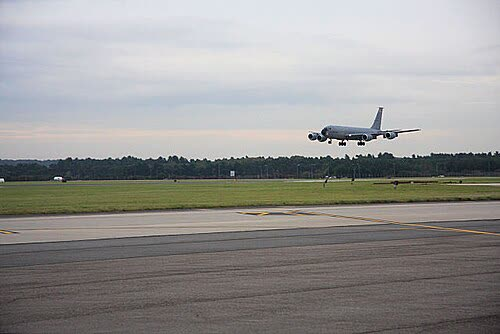

Gli Usa spostano aerei da una seconda base britannica per la «minaccia dell'Iran» (WSJ)
Per Trump la guerra con l'Iran è «finita», ma chi ospita le basi americane ne porta ancora il rischio, e nessuno spiega di quale minaccia si tratti.
Redazione Contrappunto · aggiornato il 10.11.2026


RAF Mildenhall è una base della Royal Air Force, l'aeronautica britannica, nell'Inghilterra orientale: ci operano reparti dell'aeronautica americana (Japan Times). Secondo il Wall Street Journal (WSJ), lunedì 9 novembre gli Stati Uniti ne hanno spostato alcuni aerei cisterna, cioè gli aerei che rifornono di carburante in volo gli altri velivoli, dopo una minaccia dell'Iran. È la seconda base britannica da cui gli americani ritirano aerei: poche settimane fa avevano ritirato i bombardieri B-1 da RAF Fairford, per un incidente di sicurezza legato all'Iran (Reuters, Guardian). Siamo nella guerra di Stati Uniti e Israele contro l'Iran: stamattina abbiamo scritto che Trump la giudica militarmente «finita» e nuovi attacchi americani «improbabili».
Vedi di più: 4 parole spiegate, cosa si racconta
Cosa si raccontaAl Jazeera e Japan Times (entrambe con un testo Reuters), il Guardian e il Jerusalem Post riprendono tutti il WSJ, che cita persone anonime: aerei americani via da Mildenhall dopo una minaccia dell'Iran; la natura della minaccia è ancora in discussione tra i funzionari americani. Il ministero della Difesa britannico non commenta le attività di altri paesi e dice che gli aerei si muovono per esigenze operative; l'aeronautica americana, che gli aerei ruotano tra le basi per vari motivi. Il Guardian aggiunge che sul posto non risulta una minaccia specifica e che non ci sono stati arresti. [Al Jazeera] [The Japan Times] [The Guardian] [The Jerusalem Post]
- Aereo cisterna
- Aereo che rifornisce di carburante in volo bombardieri e caccia: senza cisterne gli altri aerei arrivano meno lontano (Guardian, Jerusalem Post).
- FPCON Charlie
- Il secondo livello più alto del sistema di allerta del Pentagono: scatta quando l'intelligence indica probabile un'azione «terroristica». Secondo il WSJ vale ora per Mildenhall e per RAF Lakenheath, un'altra base americana in Gran Bretagna (Al Jazeera).
- RAF Fairford
- Base britannica nel sud-ovest dell'Inghilterra da cui i bombardieri americani hanno colpito l'Iran. A settembre cinque uomini sono stati arrestati davanti alla base e altri due più tardi, con l'accusa di aver aiutato i servizi segreti iraniani (Al Jazeera, Reuters).
- Guardie rivoluzionarie
- Corpo militare di élite dell'Iran, separato dall'esercito regolare. A luglio hanno dichiarato che Fairford e ogni altra base usata per attaccare l'Iran è un bersaglio legittimo (Al Jazeera, Guardian).
- Secondo il WSJ, lunedì 9 novembre gli Usa hanno spostato due aerei cisterna da Mildenhall verso la Germania e, più tardi, altri verso la Germania e altre sedi, dopo una minaccia dell'Iran che i funzionari americani non hanno ancora definito (Japan Times, Guardian, Jerusalem Post).
- Londra e Washington non confermano il motivo: per il ministero britannico gli aerei si muovono «according to operational requirements» (Al Jazeera, Guardian).
Al Jazeera, Japan Times, Guardian e Jerusalem Post raccontano la stessa notizia con le stesse parole: è tutta del WSJ, che cita persone anonime. Nessuna ha una conferma ufficiale della minaccia, e per il Guardian sul posto non c'è una minaccia specifica né arresti. Il coro riporta bene ma dà per spiegato ciò che nessuno spiega: di quale minaccia si tratti. Intanto Trump dice che la guerra è «finita», e chi ospita le basi americane ne porta ancora il rischio. Questa è la nostra opinione: se un alleato sposta aerei da casa sua per un pericolo che non descrive, Londra ha il diritto di sapere cosa è, e dirlo. [1] [2] [3] [4]
La verifica punto per punto3 passaggi, 4 fonti
Qui sotto ogni cosa scritta sopra, una per una, con le fonti. Confermato: lo dice un documento originale o più fonti lette. Plausibile: lo riportano fonti serie, ma non abbiamo letto l'originale. Discordante: le fonti danno numeri diversi, e diciamo quali. Ipotesi e Opinione sono il nostro ragionamento, separato dai fatti.
Cosa dice il WSJ e cosa rispondono Londra e Washington
Il WSJ riferisce, citando persone informate, che lunedì 9 novembre due aerei cisterna americani che usavano RAF Mildenhall sono stati dirottati in Germania e che altri, più tardi, sono stati spostati in Germania e altrove, dopo una minaccia dell'Iran; la natura della minaccia è ancora in discussione tra i funzionari americani (Al Jazeera, Japan Times, Guardian, Jerusalem Post). Un funzionario americano ha detto al WSJ che a Mildenhall e Lakenheath è scattato il livello FPCON Charlie (Al Jazeera, Guardian). Il ministero della Difesa britannico non commenta «the activity of other nations» e dice che gli aerei si muovono per esigenze operative; per l'aeronautica americana ruotano tra le basi «for various reasons» (Al Jazeera, Guardian). La ministra Lucy Powell ha detto che la sicurezza delle basi è sempre sotto verifica; il Guardian scrive che sul posto non risulta una minaccia specifica e che non ci sono stati arresti (Guardian). Per il Jerusalem Post il segretario di Stato Marco Rubio ha detto che la minaccia viene affrontata allontanando le persone, e i leader del Congresso sono stati informati, secondo il WSJ (Jerusalem Post).
Il precedente di Fairford
Per Reuters e Guardian gli Stati Uniti hanno ritirato i bombardieri B-1 da RAF Fairford a settembre per un incidente di sicurezza legato all'Iran; per il Jerusalem Post sono stati spostati «in early October»: la data diverge tra le fonti. A Fairford cinque uomini sono stati arrestati a settembre davanti alla base e altri due più tardi, per sospetta assistenza ai servizi segreti iraniani; le circostanze restano in gran parte non chiarite (Al Jazeera, Japan Times). Il primo ministro britannico Andy Burnham ha detto il mese scorso che l'attività a Fairford era probabilmente coordinata dall'Iran; l'ambasciatore iraniano a Londra ha negato ogni coinvolgimento. A luglio le Guardie rivoluzionarie avevano dichiarato Fairford e ogni altra base usata per attaccare l'Iran «legitimate targets» (Al Jazeera, Guardian).
Il nostro punto
Il rischio di ospitare le basi di un alleato in guerra lo porta il paese ospitante, anche quando la guerra è, per chi l'ha iniziata, «finita». Per l'Italia e per l'Europa vale la regola di sempre: gli interessi nostri vengono prima, e ogni alleato, anche l'America, deve spiegarci perché ci chiede di tenere aperte le sue basi. Una minaccia che si cita ma non si descrive non basta: a Londra serve una risposta, e a noi un metro per capire quando ci riguarda.
Fonti4, tutte con il link
- US moves aircraft from second UK base over 'threat from Iran' (Reuters, 10 novembre 2026) (Al Jazeera) · consultata il 10.11.2026
- U.S. aircraft evacuated from second U.K. base due to Iran threat, WSJ reports (Reuters, 10 novembre 2026) (The Japan Times) · consultata il 10.11.2026
- US reportedly evacuates aircraft from RAF Mildenhall over Iran threat (10 novembre 2026) (The Guardian) · consultata il 10.11.2026
- US evacuates aircraft from UK's RAF Mildenhall due to Iran threat (10 novembre 2026) (The Jerusalem Post) · consultata il 10.11.2026